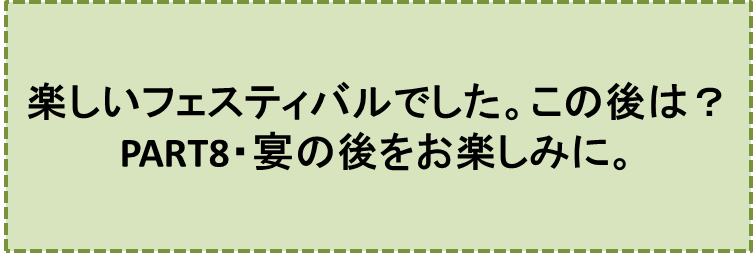

カラスの大王物語-PART7-
『サマーフェスティバル』の巻
笠原正雄
ジロー達は、翌日の夕方、ケロケロの運転するトロッコ電車に乗って「南の浜」まで行きました。
「南の浜」、本当に美しい浜です！ この浜から鳥の嘴（くちばし）のような半島がずーっと、海に向かって伸びており、半島そしてまわりの風景全体が、赤、白、黄色…、色とりどりの花達でおおわれています。
この半島のつけ根に、美しい浜に抱かれるようにして、野球場の10倍ぐらいの大きさの湾があります。
湖のように静かな湾で晴れた日にはコバルトブルーに輝きます。魂（たましい）が、すっぽり、そのまま吸い込まれてしまう美しさです。
浜辺の小高くなった所は、さしずめ内野席といった所でしょう。
広い海を眼下に見下ろせる見晴らしの良い場所に、ジロー達ほか、沢山のお客さんのための「特別席」が設けられていました。
特別席の床には緑のじゅうたんが敷きつめられており、よく見ると、大人の手の倍ぐらいの大きさのスギゴケがびっしり生えています。
この島とは別の場所から、招かれてきたのでしょう。普通の大きさの動物達がジロー達のまわりに座っていました。
特別席に腰を降ろした皆さんは、お祭りの日を指折り数えて待っていたのでしょう。ワクワク、ソワソワしながら祭りの始まりを、今か今かと待っています。
ジローは席に座って、周りを見渡しました。
少し嬉しかったことに、直ぐそばに、カラスの大王様の森で知り合った動物達が腰を降ろしていました。
裁判長のフクロウのフッキ―博士がいつも通り、思い切り胸を張って座っていました。インコの花五郎は、甲高い声を盛んに張り上げて、まわりの出席者と喋り続け、大熊のクマ吉は、大好きなクリの実を黙々とほおばり続けていました。
キツネのコンミィーは、仲良しのヒョウのレオナさんと肩を寄せ合うように並んで座り、お喋りに夢中です。誰一人ジローに気付いていてくれません。
よく見ると特別席には幾つかの空席があります。ジローの真ん前の席も空席です。
……いや、よく見ると、小さなクモが椅子の背もたれと肘かけの間に、ウチワぐらいの大きさの網作りに、今、一生懸命です。
“えっ、クモさんも招待されているの！？”
クモが網作りに精を出している様子を、ジローは首をかしげながら眺めつづけます。
この様子に、クモも気付いたのでしょう。
「やぁ、こんにちは！ ボクはクモのクンマーだよ。初めまして」
と挨拶です。
ジローはきっちり挨拶を返した後、思い切って尋ねました。日頃、考えていたことです。
「クンマー君、君、クモに生れて良かったと思う？」
クンマーは即座に答えます。
「勿論ですよ！ そういうジロー君は、人間に生れて良くなかったと思っているの？」
ジローは無言です。クンマーは言葉をつづけます。
「クモに生れて本当に良かったよ……。だって楽しいことが一杯あるのだから。
僕は東の国から招かれてここに来たのだけれど、ここに来るのに、お世話になったのは自家製飛行機さ！」
クンマーは小さな胸を思い切り張って、誇らしげに言葉を続けます。
「今朝、早い目に目をさまして、食事の後、直ぐにクモの糸を長く垂らしたのさ。これが自家製飛行機さ。後は東寄りの風さん任せ。風さんが特別席の近くまで運んでくれたってわけ。
グライダーに乗って観光ツアーってところだったかな……。人間さんに、こんなことできる？」
ジローは自信なく首を横に振りました。クンマーは
“そうでしょ。だからクモに生れて良かったのですよ”
と言わんばかりに大得意です。
「たいくつな時は仲間達と誰が一番高く飛ぶかとか、目標の木に向って誰が一番近くまで飛ぶことができるかとか、こんな競争もやるんだけれど、やり出したら、止(や)められないぐらい楽しいよ。……ボク、クモに生れて本当に良かったと思う。
生んでくれたお父さんやお母さんに感謝している」
ジローはこの答にすっかり満足し納得です。日頃、クモちゃんたちに尋ねてみたいと思っていたことについて、今、クンマー君から明快な答えが得られたのですから、ジローが満足するのも当然ですよね。
特別席のまわりにはカタツムリ、カブト虫なども招かれて椅子に座ってフェスティバルの始まりを待っています。
カタツムリは長い触角の先についた目をキョロキョロ動かしながら肘かけの上を、前の方へ這ったり、後ろの方へ這って行ったり……。きっとフェスティバルの始まりを待ち兼ねているのでしょうね。
カブトムシは背もたれをゴソゴソ動きまわって、もっと見晴らしのよい高い場所はないものかと、忙しく探しまわっています。
特別席では小さな動物も大きな動物も、平等に席が一つずつ与えられて、それぞれが、それぞれの姿勢で待っているのですね。
そう言えば小さなタマも大きなゴンも、同じ大きさの席に座っています。
タマは背筋をしっかり伸ばして得意気です。一人で大きな椅子を占領できて大満足です。
ジローは、カラスの大王の森で知り合った恐い思い出ばかりの仲間達、そして小さな動物達と一緒に、今、仲よく座って、フェスティバルの開始を待っていることに、何か胸にこみ上げてくるものを感じました。
地球は本当に素ばらしい惑星、感謝の思いがジローの胸の中にしっかり宿ります。
“みんな仲間なんだ”
ジローは、心の底からこみあげてくるような喜びを感じます。
夕日が水平線に半分ほど隠れたとき、見物客の視線が浜辺に一斉に集中しました。
浜辺で「大王様の森・サルの機動隊」が軍楽隊のように整列していて、
『海、山、川、森そして草原、いつまでも美しく！』
という勇壮な行進曲を演奏し始めました。
さあ、待ちに待ったフェスティバルの始まりです。
“ドーン”“ドーン”“ドーン”
と何発もの花火が勢いよく打ち上げられました。
お客さん達の胸は、ワクワク感でいっぱい。視線が、一斉に海面に集中します。
静かな海が、突然白く泡立って、大きく盛り上がったと思うと、シロナガスクジラ位の大きさの数頭のシャチが、見上げる程高く空に舞い上がり始めました。
“ザブーン”“ザブーン”“ザブーン”
と湾いっぱいに水しぶきをあげて、海の中に戻ります。
巨大なシャチのジャンプは、何度も繰り返されました。内野席のお客さん達は圧倒されます。感動して、拍手、拍手、拍手の嵐です。
“ブラボー”“ブラボー”
と叫んで、もう一度、もう一度と催促です。
シャチ達は何回もアンコールのジャンプをしました。
最後に数頭そろって手をつなぎ
“バイバーイ、またね”
というように名残りのジャンプをしました。
“ドーン”“ドーン”“ドーン”
再び花火が打ち上げられました。
と同時に、ニワトリぐらいの大きさのハトが数百羽、浜辺のあちらこちらから一斉に飛び出し、海の上をぐるぐる飛び回った後、マスゲームのような形で海面すれすれから、天にも届けとばかりの大きなハトの輪を、見事なチームワークで作りあげました。
ハト達の輪は海の上に浮かぶ大きな車輪のようになって、ゆっくり、ゆっくり上下に回り、夕日にまぶしく輝きます。
ドーンという花火の音を合図に、沢山の大ワシが一斉に浜辺を飛び立ちました。小型飛行機ぐらいの大ワシが、湾の上に出現したハトの大車輪上に乗り、一緒にゆっくり回転し始めます。
ハト達と大ワシ達とが見事なチームワークで作り上げた大観覧車！
ぽっかりと空中に浮かび、夕日をあびてゆっくり、ゆっくり回ります。海辺に出現した幻想の世界の大観覧車です。
水面が再び大きく盛り上がりました。水族館では、到底お目にかかることができない大きな大きなイルカ達による、ジャンプの始まりです。イルカ達は、次々と大観覧車の輪をくぐり抜けます。
ハトと大ワシとイルカ達による見事なマスゲーム！
“ブラボー”“ブラボー”
お客さん達のスタンディングオベーション、拍手が鳴り止みません。
やがて日は、とっぷり暮れました。まるで休憩時間ですよと言うように、静かになりました。
静かな静かな夕暮れの浜です。
夜空の星達が
“キラッ”“キラッ”“キラッ”
と輝き始めます。息を飲む真夏の星空。
ジローは自分もまた、この壮大そして神秘的な宇宙の一員なんだ、星達との仲間なんだと強く思いました。
初めて分かった自分自身の存在。宇宙の一員としての存在。
ジローの胸は感動に震えます。荘厳な夜空が、ジローに無限の感動を与え続けます。ジローの目に涙が浮かびます。
ゴンやタマ、そして浜辺に集まった動物達も同じ思いだったに違いありません。天を仰いで星空を眺め、シーンと静まりかえっています。
静かな海、静かな動物達、夜空に沢山の星達、そして三日月が輝きます。
数分間も続いた静寂を破るように、軍楽隊が
歌曲『浜辺の歌』
を、とても静かに演奏します。
続いて
行進曲『海、山、川、森そして草原、いつまでも美しく！』
を勇壮に演奏します。
この曲が終わるのを待ち兼ねていたのでしょう。
沢山のホタルイカ達が、キラ、キラ輝きながら海から飛び出してきました。ホタルイカはタイやヒラメぐらいの大きさで、眩しいばかりの光を放ちます。
“ドン”“ドン”“ドン”
という太鼓の音を合図に、ホタルイカによるマスゲームの開始です。
ホタルイカ達は、大きな大きな光のボールを形づくり、湾全体を眩しく照らします。
再び
“ドン”“ドン”“ドン”
という合図とともに、大きな光のボールは、花火のように広がって海の中に消えました。
会場からは拍手、拍手、拍手の嵐です。
ホタルイカはこの拍手の嵐に誘われて、海から舞い上がり、光のボールとなってそのまま海に飛び込んだり、海から光のボールとなって突然現れたりして、観客を魅了しました。
この後も、様々なショウが、賑やかに繰り広げられ、夜8時過ぎに終了しました。
ジロー達はお祭りを十分に楽しんで、村役場に帰ってきました。
ミィミィ村長は一足先に帰ってきて、ホールの椅子に座ってジロー達の帰りを、今か今かと待っていました。
……とても大切な用事が残っているからです。
♪♪♪♪コーヒーブレイク♪♪♪♪

<